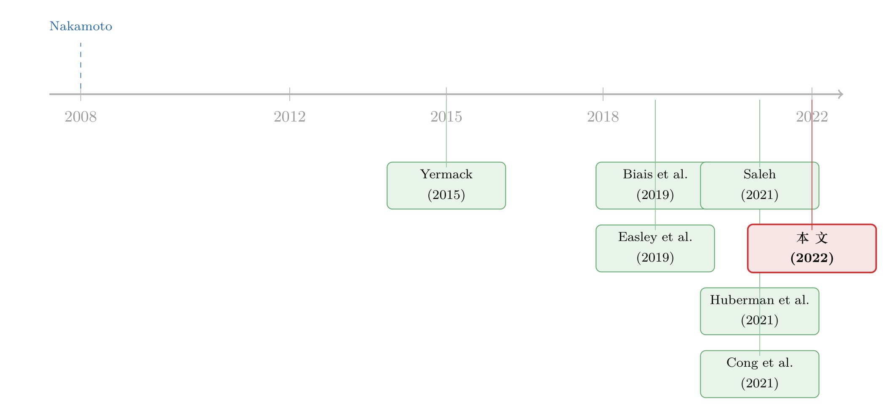

比特币的「人越多越慢」：一个把有限采用写进均衡的故事
本文读的是 Hinzen, John & Saleh (2022, JFE)：比特币迟迟无法被广泛采用，并不是「还年轻、再等等就好」的暂时现象，而是它去中心化设计本身逼出来的均衡结果。原因是一种被以往文献忽略的负网络效应——网络越大，达成共识越慢，结算越久，用户越逃；而「提高交易速率」这条看似显然的解药，反而会因为分叉概率上升而把问题做得更糟。
1 一个被反复问、却没答好的问题
比特币 (Bitcoin) 被 Nakamoto (2008) 提出时，目标写得很清楚：做一个被广泛采用的去中心化支付系统。十几年过去，结果有点尴尬——用比特币的人确实不少，作者举了个很有画面感的对比：全世界用比特币的人超过 3000 万，比新西兰全国 500 万人口还多；可新西兰元 (NZD) 在新西兰的采用率接近 100%，而比特币在世界上任何一个地方的采用率都不到 1%。
于是一个自然的问题摆在那里：到底是比特币「还没长大」，还是它的经济设计注定长不大？
绝大多数人——包括很多研究者——下意识地选了前者。技术会进步，速度会变快，等基础设施成熟了，采用率自然会上去。这篇论文偏偏要论证后者：有限采用 (limited adoption) 是一个稳态均衡，不是一段会自行消退的过渡期。更扎心的是，他们证明了那条人人都会想到的提速方案——「需求大了，就让账本更新得更快一点」——在比特币这里是失灵的。
这篇文章想把这个反直觉的结论一步步讲透。它没有数据、没有回归，是一篇彻头彻尾的理论论文，但它的力量恰恰在于：用一个干净的排队模型，把「为什么人越多反而越慢」这件事，从工程现象抬升成了经济学命题。
2 先想清楚：网络效应的「正」与「负」
我们对支付系统的直觉，几乎全是正网络效应：用的人越多，这个网络对每个人越值钱（你的微信好友越多，微信越好用）。传统理论分析比特币时，也默认它是这样——用的人越多越香。
接着，一个自然的问题是：如果只有正网络效应，那比特币应该会像所有平台一样，一旦越过临界点就「赢家通吃」式地扩张到near-universal。可现实没有。问题出在哪？
论文的核心洞见是：比特币里同时藏着一股负网络效应 (negative network effects)，而它来自两样东西的叠加——共识 (consensus) 的需求，与网络延迟 (network delay) 的存在。
这里的「网络延迟」指的是：一条新信息要传遍整个矿工 (miner) 网络、变成所有人的「共同知识」，需要时间。文献以往分析比特币时，几乎都把这块抹掉了——默认信息瞬时传达。这篇论文的新意，就是把网络延迟显式地写进模型。
为什么共识 + 延迟会生出负网络效应？逻辑链条是这样的：
- 比特币的账本要求所有矿工就「哪些交易、按什么顺序上链」达成一致，一笔交易只有在所有人都认账时才算结算。
- 矿工们没法对一条他们还不知道的信息达成一致。而让所有人都知道一条信息，需要时间——这就是网络延迟。
- 网络越大，节点之间互相通信、把信息扩散到全网所需的时间越长。于是网络一扩张，达成共识就越慢。
换句话说：网络规模 ↑ → 网络延迟 ↑ → 共识更难 → 结算更慢 → 用户体验更差。这就是那股负网络效应。它和正网络效应（用的人多、单位采用收益高）在同一个用户身上拉锯，谁赢，决定了均衡的采用率。
（区块链「记账权」如何配置、何时才划算，是另一条平行的研究线，关于这一点可参见《谁来给账本盖章？——去中心化记账，到底什么时候才划算》。）
3 杂货店的收银台：一个让人恍然大悟的类比
负网络效应听起来抽象，作者用了一个绝妙的类比把它讲明白了。
设想一家杂货店突然来了一大波顾客（类比比特币交易需求暴涨）。店长怎么办？很简单——多开几个收银台，提高处理速率，排队就短了，顾客不会因为等太久而摔门而去。提高处理能力 = 解决拥堵，这是传统设定下的标准答案。
那真正关键的一步在于：为什么同样的招式在比特币里就不灵了？
差别在于收银台不需要彼此商量。每个收银员各管各的队，平行处理，互不通信——所以「沟通时间」（类比网络延迟）根本不存在，加收银台稳赚不赔。
可是想象一个荒诞版本的杂货店：所有收银员被要求共同商定一个统一的顾客处理顺序，谁先谁后必须全店达成一致（这正是「共识」）。这时候你再多加收银员，会发生什么？沟通的复杂度暴涨，大家协调一个统一顺序越来越难，反而更慢了。
比特币就是这个荒诞版本。增加矿工（加收银台）不仅不能缩短等待，反而因为要在更大的网络里达成共识而延长了结算时间。于是反转出现了：在比特币里，扩张是有代价的。
4 模型：把这个故事写成方程
论文把比特币建模成一个排队系统 (queuing system)：矿工是服务台，用户是排队的人。我们一块一块把积木摆出来。
4.1 用户
在 \(t=0\)，有 \(N \ge 2\) 个用户同时到达，每人有一单位交易需求，要么用比特币、要么用一个「传统替代方案」（外部选项，效用归一化为 0）。
用户 \(i\) 有一个类型 \(c_i \sim U[\underline{c}, \overline{c}]\)，刻画她对「等待」的厌恶程度（越大越不耐烦）。论文假设 \(\underline{c} > 0\)，即所有人都没耐心。她可以付一笔费用 \(f \ge 0\) 来缩短预期等待时间 \(\mathbb{E}[W(f, f_{-i})]\)（矿工按费用从高到低处理交易，付得多的排前面），但付费本身也带来等额的负效用。她从用比特币交易中获得的总效用是：
$$\max_{f\ge 0}\; R_1\cdot(\pi^* N)^\alpha + R_0 - c_i\cdot \mathbb{E}[W(f, f_{-i})] - f$$
这里 \(R_0, R_1 \in \mathbb{R}_+\)、\(\alpha \in (0,1)\) 是外生参数，\(\pi^* \in [0,1]\) 是内生的比特币采用率，\(\pi^* N\) 就是采用的总人数。
这个效用函数是整篇论文的心脏，它把正负两股网络效应同时收进了一个式子里。我们把它拆开看：
用户的决策很简单：如果在最优费用下这个效用 \(\ge 0\)，她就用比特币（即 \(c_i \le c^*\)）；否则她转向传统方案。论文沿用 Huberman et al. (2021) 的做法，只看门槛均衡 (cut-off equilibrium)：采用的人恰好是 \(\{i : c_i \le c^*\}\)，那个临界用户 \(c^*\) 被称为「边际用户」。采用率与门槛是一一对应的：
$$\pi^* = \frac{c^* - \underline{c}}{\overline{c} - \underline{c}}, \qquad c^* = (\overline{c} - \underline{c})\cdot \pi^* + \underline{c}$$
4.2 矿工
矿工要先付一笔成本 \(\beta > 0\) 购置算力，然后赚取区块奖励 \(B\) 和交易费。假设每个矿工算力相同、风险中性，他解的是：
$$\max\Big\{\tfrac{1}{M}\big(B + \mathbb{E}[\textstyle\sum_i f_i]\big) - \beta,\; 0\Big\}$$
其中 \(M\) 是均衡矿工数。关键在于比特币对矿工自由进入 (free entry)——当矿工没门槛，进入会一直持续到无利可图，于是均衡满足零利润/自由进入条件：
$$M = \frac{B + \mathbb{E}[\sum_i f_i]}{\beta}$$
这个式子是整条因果链里最被低估的一环：费用一涨，矿工数就涨。记住它。
4.3 区块链与分叉
比特币的账本由「区块 (blocks)」按顺序串成链。一个矿工产出有效区块的过程被近似为泊松过程。论文偏离以往文献的地方在于：它承认并非所有有效区块都能进入主链——两个在互不知情下产出的区块必然彼此不一致，这种不一致就是分叉 (fork)。
而分叉为什么会发生？正是因为网络延迟。矿工 \(j\) 在收到矿工 \(i\) 的区块之前，自己又挖出了一个块，两人就会各执一词。论文给出某个有效区块成为分叉的概率：
$$P(\text{Fork}) = 1 - e^{-\Lambda\, \Delta(M)}$$
这里 \(\Lambda\) 是交易速率，\(\Delta(M)\) 是网络中 \(M\) 个矿工两两之间、对一个标准化单交易区块的平均网络延迟。论文对 \(\Delta(M)\) 只施加两条很弱的假设：(1) 单矿工网络（中心化）没有延迟，\(\Delta(1)=0\)；(2) 网络规模超过一个矿工后，延迟随规模递增——这与比特币随机网络拓扑的特征是一致的（见 Chung & Lu, 2002；Riordan & Wormald, 2010）。
到这里，那条负网络效应的链条在数学上彻底闭合了：\(M \uparrow \Rightarrow \Delta(M) \uparrow \Rightarrow P(\text{Fork}) \uparrow\)，分叉越多，重新达成共识越久，用户等待 \(\mathbb{E}[W]\) 越长。
5 两个主结果：为什么注定长不大，为什么提速救不了
5.1 Proposition 2：有限采用是均衡
第一个主结果说的是：当交易需求变得很大时，比特币无法维持一个非微不足道的采用率。论文把这个叫做「有限采用问题 (limited adoption problem)」。
它的经济逻辑是一条漂亮的连锁反应。先回想一个比特币的事实约束：账本大约每 10 分钟更新一次，这相当于对交易速率施加了一个供给约束。当交易需求大涨时——
- 由于交易速率被供给约束卡住，价格而非数量来出清市场：费用（加急服务的「价格」）被推高；
- 费用一高，当矿工的预期收益就高；由 §4.2 的自由进入条件，更多矿工涌入，\(M\) 变大；
- 网络一扩张，网络延迟 \(\Delta(M)\) 随之恶化；
- 因为需要共识，延迟拉长了用户的预期等待 \(\mathbb{E}[W]\)；
- 等待变得难以忍受，用户纷纷转向传统替代方案——采用率 \(\pi^*\) 萎缩。
于是需求越大，反而把采用率往下压。这就是有限采用：不是技术不成熟，而是均衡机制自己把门关上了。
5.2 Proposition 3：提速反而火上浇油
读到这里，聪明的读者一定会想到那条「杂货店式」的解药：既然 10 分钟的速率约束是瓶颈，那就让比特币采用一个弹性交易速率，需求大了就提速不就行了？
但真正关键的一步在于——这正是论文第二个主结果要堵死的路。提高交易速率 \(\Lambda\)，在杂货店里管用，在比特币里失灵。原因直接写在分叉概率里：
$$P(\text{Fork}) = 1 - e^{-\Lambda\, \Delta(M)}$$
\(\Lambda\) 一旦调大，分叉概率 \(P(\text{Fork})\) 跟着上升。分叉越多，意味着越频繁地出现「大家手里的账本不一致」，于是要花更多时间才能重新达成共识。共识过程被拖长，用户等待被拖长，采用率被拖垮。
这是全文最反直觉、也最深刻的一点：在一个需要共识的去中心化系统里，「提高吞吐量」和「保持快速结算」是相互冲突的两个目标。你想让账本转得更快，就得忍受更多分叉，而分叉恰恰让「就一个统一账本达成一致」这件事变得更慢。Decker & Wattenhofer (2013) 的实证就指出，比特币的分叉很大程度上正是网络延迟造成的。
附录 A 还证明了一个有用的等价关系：改区块大小和改出块速率在模型里是等价的——所以「提速」无论用哪种工程手段实现，结论都一样。
6 一个重要的澄清：币 ≠ 支付系统
论文特别强调了一个区分：比特币支付系统 (Bitcoin the payment system) 和它的原生资产 比特币 (bitcoin the asset) 是两回事，本文只论前者。
它的结论不否定 bitcoin 作为资产的成功——只是说，这种成功不太可能来自底层支付系统的广泛采用。换句话说，bitcoin 更应该被看作「医疗用途之外的某种东西」，而非一种交易媒介 (medium of exchange)。这一点与 Biais et al. (2020) 的发现相互印证：交易性收益只能解释 bitcoin 价格变动中微不足道的一小部分。
（如果你对「代币凭什么有正价格」这一资产侧的问题感兴趣，可参见《零成本的代币，为什么卖得出正的价格？》，以及《把价签换成代币，弱者如何赢下价格战》。）
7 文献脉络
这条研究线的演进，是一部「先讲币、再讲账本、最后讲采用」的历史。
最早，Yermack (2015) 抛出了那个尖锐的问题——比特币算不算一种真正的货币？接着，经济学家开始用博弈论和均衡的语言解剖比特币的内部机制：Biais et al. (2019) 的「区块链民间定理」刻画了挖矿博弈的多重均衡，Easley et al. (2019) 研究了交易费如何从无到有地演化，Huberman et al. (2021) 把比特币支付系统建成一个「没有垄断者的垄断」排队模型——本文用户侧的门槛均衡正是沿用了他们的框架。

与此同时，另一条线在追问「资产价格从哪来」：Cong et al. (2021) 的 tokenomics 把代币的动态采用与估值连起来，Saleh (2021) 论证了权益证明 (Proof-of-Stake) 如何在不浪费能源的前提下达成共识。而真正和本文贴身肉搏的，是 Cong et al. (2021b) 与 Iyengar et al. (2022)——两者也研究区块链采用，但前者抽象掉了网络延迟，后者研究的是商业场景下的许可链 (permissioned blockchain)，都没有专门盯住比特币这个公链 + 共识 + 延迟的特定组合。本文的坐标就钉在这里：它是第一个把网络延迟显式写进比特币采用模型、并由此挖出负网络效应的工作。
8 评论与延伸（Q&A + 研究方向）
(a) 几个可能的疑问
Q：这只是个理论模型，没有任何数据，结论可信吗？
它的说服力来自机制的稳健性而非数据拟合。模型对网络延迟函数 \(\Delta(M)\) 只要求两条极弱的性质（\(\Delta(1)=0\)、随 \(M\) 递增），对挖矿市场结构也不设具体形式，主结果依然成立；甚至连「共识只需对最近一个区块达成一致」这种最宽松的情形（\(b=1\)）下，有限采用照样出现。所以它更像一个不可能性结论：只要共识 + 延迟同时存在，结局就跑不掉。当然，它仍是模型，外生参数（如供给约束、自由进入）是否贴合现实，是可以争的。
Q：负网络效应和「拥堵 (congestion)」是一回事吗？
不是，这是本文最容易被误读的地方。普通拥堵（排队的人多）靠加服务台就能解，杂货店就是这样。本文的负网络效应特殊在于：加服务台（加矿工）本身恶化了服务能力，因为矿工之间需要达成共识，而通信是有延迟的。是「共识 × 延迟」这个交互项，而不是单纯的排队，制造了负效应。
Q：那现实中的闪电网络 (Lightning)、分层方案不是已经在解决这个问题了吗？
论文在第 5 节明确说：它的结论适用于比特币及类似的「需要全网共识」的区块链，但不适用于区块链一般。Bitcoin-NG、现代权益证明、许可链等提案确实可能绕开有限采用——本文恰恰是在论证「为什么原版比特币的设计绕不开」，并把这些替代方案列为「值得经济学家进一步研究但目前研究不足」的方向。所以它不是在唱衰所有区块链，而是在精确界定原版设计的边界。
Q：「采用率不到 1%」会不会只是因为比特币还年轻？
这正是本文要反驳的「短暂性」假说。它的回答是：把采用率当作交易需求变大时的极限行为来分析——需求越大，价格机制越是把矿工吸进来、把延迟推上去、把用户赶出去。所以问题不会随时间自愈，反而会随需求增长而加剧。年轻不是借口，设计才是宿命。
Q：为什么模型假设矿工有耐心、用户没耐心？这合理吗？
这是个刻意的非对称设定，且有现实依据。用户做的是即时消费类交易，等一个小时甚至几天会让他直接放弃（高 \(c_i\)、缺乏耐心）；而挖矿是一门生意，晚几个小时甚至几天拿到收入在经济上无关紧要，所以矿工被建模成有耐心。正是这种非对称，让「结算延迟」对用户的杀伤被放大。
Q：这对「比特币 vs 央行数字货币 / 传统支付」的争论意味着什么？
含义很直接：在支付系统这个赛道上，去中心化共识天然带着一个可扩展性税，需求越大、税越重。中心化系统（\(M=1\)，\(\Delta=0\)）没有这个负网络效应，所以传统支付能轻松做到近乎 100% 的采用率。这给「比特币能否直接取代法币支付」泼了一盆理论上的冷水。
(b) 几个可能的研究问题与提案
1. 把负网络效应搬到信用市场的清结算上
【经济故事】如果未来公司债的发行、登记、清结算上链到一个需要共识的分布式账本，那么本文的逻辑预测：交易笔数（需求）越大，结算延迟越长，反而损害债券的流动性。这是「区块链改造债市」叙事里一个被忽略的反向力量。 【可行性】中。理论部分可直接扩展本文模型，把「用户」换成做市商/投资者，加入库存成本。实证识别较难，因为真正上链的债券清算样本还很稀少；可先用现有 DvP 试点（如部分回购市场）的结算时延数据做描述性检验。
2. 外资持有人与「全网共识」式市场基础设施的交互
【经济故事】跨境结算往往涉及多个司法辖区的节点，节点之间的「网络延迟」天然更大。本文逻辑预测：参与方越多、地理越分散，达成共识越慢。这可能解释为什么某些跨境结算系统在参与机构扩容后反而变慢。 【可行性】中偏低。需要跨境结算系统（如某些 CSD 互联）的节点级时延与参与方数据，多为非公开。识别上可利用「新成员加入」这类离散事件做事件研究。
3. 矿工自由进入条件的实证检验
【经济故事】本文因果链的关键一环是「费用上升 → 矿工进入 → 网络延迟恶化」。这一环是可以拿真实链上数据检验的：交易费冲击之后，全网算力/节点数与区块传播延迟是否如模型预测般同向变动？ 【可行性】高。比特币的链上交易费、全网算力、以及 Decker & Wattenhofer (2013) 那类区块传播延迟测量都有公开数据。可用费用的外生冲击（如某次需求暴涨事件）做局部投影或 IV。这是本文最 doable 的一个延伸。
4. 区块大小/出块速率调整的自然实验
【经济故事】附录 A 证明了「改区块大小」与「改出块速率」等价，且提速会抬高分叉率。比特币历史上的几次扩容争论（乃至分叉出 BCH）正是天然的实验：速率/区块上限提高后，分叉频率与结算确认时间是否真的恶化？ 【可行性】高。BTC 与 BCH 的链上数据完全公开，可做双重差分 (difference-in-differences, DiD)，以同源但参数不同的两条链互为对照，检验提速是否如 Proposition 3 所言不增反降地损害了有效结算。
5. 把「负网络效应」嵌入资产定价
【经济故事】如果支付侧的采用率随需求内生萎缩，那么 bitcoin 作为资产的「交易性便利收益」就应当是反周期于需求的——需求越旺，支付越拥堵，便利收益越低。这给 bitcoin 的横截面/时序定价提供了一个可检验的、与众不同的预测。 【可行性】中。需要把链上拥堵指标（mempool、费率、确认时延）构造成因子，检验其对 bitcoin 收益的预测力。数据可得，难点在于把「便利收益」从投机性需求中干净地剥离出来。
我的判断
这篇论文的贡献是概念性的，而且分量很重：它把「比特币为什么没火」从工程闲谈和泛泛的「网络效应」直觉，提炼成一个有清晰因果链、可被证伪的经济学命题——共识 × 网络延迟 = 负网络效应，而且漂亮地证明了最显然的解药（提速）为什么会南辕北辙。那个杂货店类比，是我近年读过的把抽象机制讲明白的最好范例之一。
对识别（这里是模型可信度）的担忧，我有两点。其一，模型把交易速率的供给约束当成外生事实（10 分钟），但现实中的二层网络、批处理、侧链恰恰是在松动这个约束，模型对这些「在共识之外结算」的方案默认不适用——这既是它诚实的边界声明，也意味着它的悲观结论只锁定在「链上全网共识」这一狭窄设定里。其二，自由进入条件假设矿工同质、算力均分，而现实是高度集中的矿池，集中化会不会改变 \(\Delta(M)\) 与 \(M\) 的关系（一个矿池内部不需要 P2P 共识），值得更仔细地推。论文在 5.1 节讨论了中心化，但我想看到更系统的处理。
后续我最想看到的，是把这套「负网络效应」逻辑搬出比特币：一是做成可检验的链上实证（提案 3、4 最 doable），用扩容事件直接验证「提速→分叉↑→确认变慢」；二是推广到任何「需要多方达成一致」的金融市场基础设施上——跨境清算、分布式债券登记——看看那个「人越多越慢」的诅咒，是不是去中心化的普遍代价。
参考文献
- Biais, B., Bisière, C., Bouvard, M., Casamatta, C. (2019). The blockchain folk theorem. Review of Financial Studies 32(5), 1662–1715.
- Biais, B., Bisière, C., Bouvard, M., Casamatta, C., Menkveld, A.J. (2020). Equilibrium Bitcoin Pricing. Working Paper.
- Chung, F., Lu, L. (2002). The average distances in random graphs with given expected degrees. Proc. Natl. Acad. Sci. 99(25), 15879–15882.
- Cong, L.W., Li, Y., Wang, N. (2021). Tokenomics: dynamic adoption and valuation. Review of Financial Studies 34, 1105–1155.
- Decker, C., Wattenhofer, R. (2013). Information propagation in the bitcoin network. IEEE P2P 2013 Proceedings.
- Easley, D., O'Hara, M., Basu, S. (2019). From mining to markets: the evolution of bitcoin transaction fees. Journal of Financial Economics 134(1), 91–109.
- Hinzen, F.J., John, K., Saleh, F. (2022). Bitcoin's limited adoption problem. Journal of Financial Economics 144(2), 347–369.
- Huberman, G., Leshno, J.D., Moallemi, C. (2021). Monopoly without a monopolist: an economic analysis of the bitcoin payment system. Review of Economic Studies.
- Iyengar, G., Saleh, F., Sethuraman, J., Wang, W. (2022). Economics of Permissioned Blockchain Adoption. Working Paper, Columbia University.
- Nakamoto, S. (2008). Bitcoin: a peer-to-peer electronic cash system. https://bitcoin.org/bitcoin.pdf.
- Riordan, O., Wormald, N. (2010). The diameter of sparse random graphs. Comb. Probab. Comput. 19, 835–926.
- Saleh, F. (2021). Blockchain without waste: proof-of-stake. Review of Financial Studies 34, 1156–1190.
- Yermack, D. (2015). Is bitcoin a real currency? An economic appraisal. Handbook of Digital Currency, 31–43.